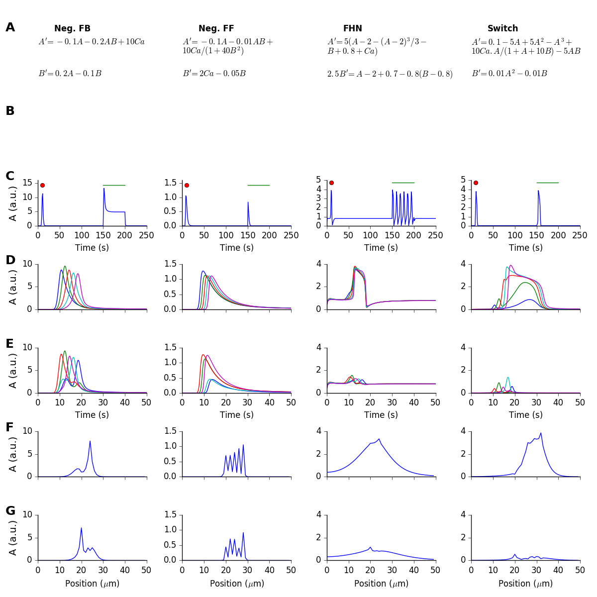
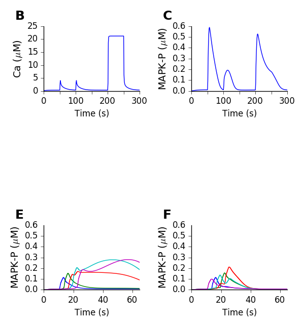

This is the readme for simulations for the paper: Bhalla US (2017) Synaptic input sequence discrimination on behavioral time-scales mediated by reaction-diffusion chemistry in dendrites. Elife This archive was contributed by Dr U. Bhalla This zipfile contains the following files: README.html: this file Fig2.py: Script for generating Figure 2. abstrModelEqns9.py: Script defining abstract models for Figure 2 Fig5.py Script for generating panels BCEF of Figure 5 Fig5_3d.py Script for generating panel D of Figure 5 Fig6_generate_data.py Script for generating data files for Figure 6 Fig6.py Script for making panels B-J of Figure 6. NN_mapk14.g GENESIS chemical model definition file for Figure 6 proto21.py Channel prototypes for Figure 6 VHC-neuron.CNG.swc Morphology file for Figure 6 ============================================================================= To generate the figures: Figure 2: (takes about 10 seconds) python Fig2.py  Figure 5: (takes about 30 seconds) python Fig5.py  python Fig5_3d.py (This will only work if you have Moogli installed. It generates the 3-D view of the modeled dendrite.) Figure 6: (takes about 6 hours for each generation run, and 5 seconds for the final figure) python Fig6_generate_data.py --fnumber 0 --sequence 1234 python Fig6_generate_data.py --fnumber 2 --sequence 40312 python Fig6.py ( This assumes that the files Fig6_data.0.1234.xplot and Fig6_data.2.40312.xplot have been generated from the previous two commands. Note that I have explicitly embedded the results from a big parallel run for the tuning matrices into the script file.) =============================================================================